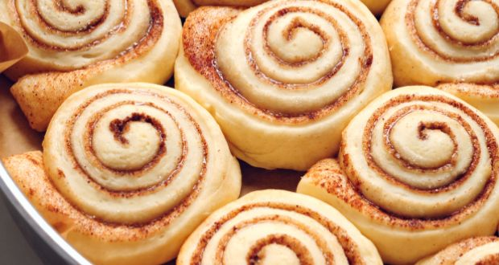

Cinamon Rolls!

Its a basic recipe for Cinnamon rolls, learned to make it around one or two years ago,
very nice (it's not quick to make though, fermentation takes a while)
INGREDIENTS
- 600[g] Flour
- 250[mL] Milk
- 60[g] Of either butter or Margarine
- 10[g] of Yeast
- 2 Eggs
HOW TO MAKE THE THING
- Mix the ingretdients in a machine
- Leave it in the fridge for 8 hours minimum for fermentation, more time is alright though :)
- Take it out, stretch the dough
- Cover with butter and Cinamon sugar
- Roll it
- Cut it in pieces
- Put it on a baking tray and bake at 200C for 15 minutes or until it looks right, never takes more than 20 though